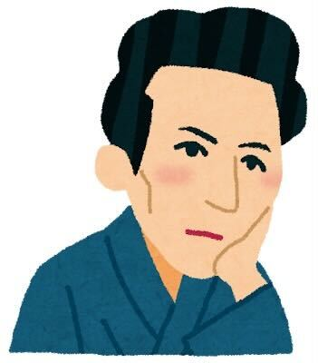

研究室メンバー
教員・スタッフ
-
福永 津嵩（准教授）研究トピック: 機械学習
個人ページ大学院生
-
森平 健太郎（M1）研究トピック: 機械学習
学部生
-

青木 賢（B4）研究トピック: RNA二次構造、アルゴリズム
-
石塚 結衣（B4）研究トピック: シングルセルオミクス、データ解析
-
磯部 和花（B4）研究トピック: RNA二次構造、機械学習
-
野代 乙希（B4）研究トピック: 比較ゲノム、データ解析
-
増田 大希（B4）研究トピック: 数理モデル、機械学習
-
山岸 優希（B4）研究トピック: ゲノム解析、機械学習
-